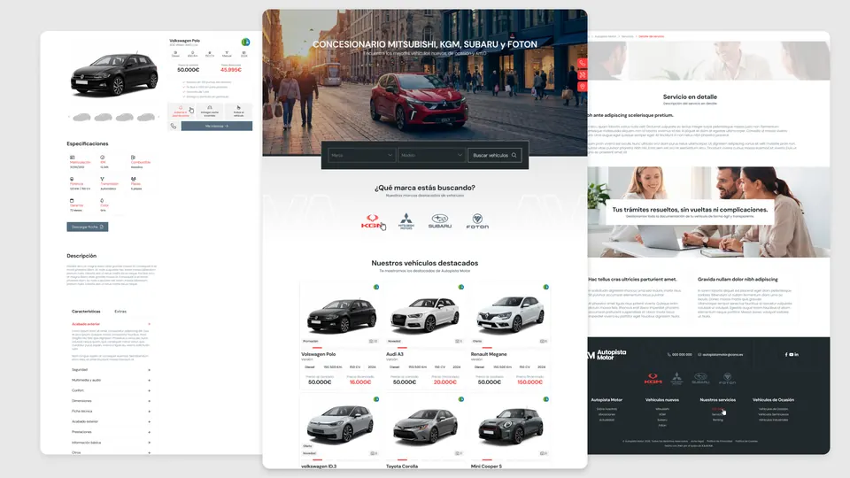
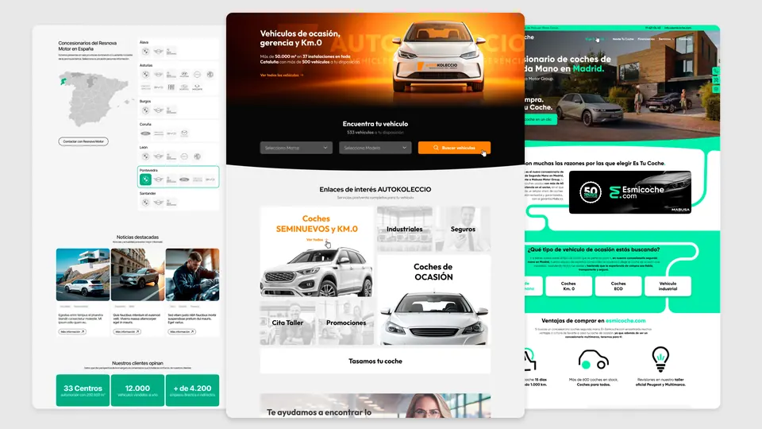

01 — Product Design · SaaS
Kaavan KWS
KWS is Kaavan's SaaS platform for building car-dealership websites from blocks, views and components. I've been its principal designer for over two years — inheriting its design system, then scaling and largely rebuilding it — and today I'm the company's only designer.

Overview
KWS lets official car dealerships and dealer groups build and run complete websites from one shared system: blocks made of views, which are made of components. Clients can create their own blocks, sections and pages without a developer touching every new site, and an import, export and management layer keeps each dealer's data flowing in.
When I joined Kaavan in 2023 the platform was already performing well, with a design system inherited from the previous designer. Over time I took full ownership of it — scaling it, restructuring it and rebuilding much of its components and variables. Today I'm the only designer in the company, covering the product, the client templates and, when needed, logos and corporate identity.
Challenge
- 01One system had to serve very different clients — from single-brand dealers following an official manufacturer's guidelines to multi-brand groups with their own identity — without fragmenting.
- 02Dealer data is variable and flexible: text lengths, images and fields change with every import, so no layout can assume fixed content.
- 03Every new view or block has to be designed and tested against real content before it ships, which makes growth slow and delicate.
- 04AI-driven features were being added and needed a design foundation that could absorb them without a rebuild or disrupting teams already using the platform.
Process
For each client template I usually run the kickoff myself, to understand what the site has to achieve: a corporate group site, built around presence and official brands, is a very different problem from a sales-driven site that has to convert. I then present the designs to the client's marketing lead, answer their questions and collect feedback that I translate into requirements for front-end development and the import system. Clients often don't know exactly what they need, so part of the job is guiding them towards what experience shows works best.
Templates, page by page
A full dealership site built from the same blocks: home with brand selector and vehicle search, stock listings, vehicle detail pages with specs and financing, and service pages with a shared footer.

Same system, different brands
The same blocks, views and components restyled for each dealer — light or dark, with official brand colours, imagery and typography — all on one 8-pixel grid with shared styles for colour, type, spacing and shadows. Groups with 20 to 30+ official brands run on it.

300+ dealership clients on one design system.
Built to flex
Beyond the standard layout: dealer-network maps by region, news, key-figure highlights and vehicle search, adapted to much bolder brand palettes without leaving the system. Layouts absorb AI-driven features and imported content whose length can't be predicted.

Beyond automotive
The same architecture powers non-automotive sites too, such as an insurance brokerage: service cards, promotions, contact forms and partner logos, all rebuilt from the same blocks.

Solution
A design system built to keep scaling: modular blocks, views and templates, documented components and a foundation that already absorbs AI-driven features — so every dealership client gets a site that fits its brand from one shared source.
Key decisions
- 01Growing the library with care: new views and blocks only ship once they've been tested against real, variable content.
- 02Bringing AI into the platform without breaking layouts: designing for unpredictable text length instead of fixed copy.
Looking back
Today I'd split the Figma architecture into more independent files, add dedicated systems for logos, icons and typography, and design mobile-first instead of adapting from desktop, given how much dealership traffic comes from phones.
Impact
Client names and live-site visuals are omitted for confidentiality.